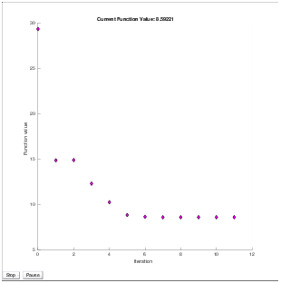
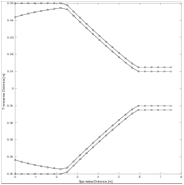
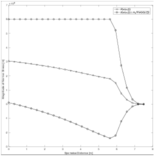

Stochastic Shape Optimisation of UAV Wing under Uncertainty |
Abstract: This paper examines the design of a wing for a new long-endurance aircraft that will be used as a telecommunications platform. In particular, the problem of optimizing the shape of the wing’s spar, acting as the aircraft’s main structural support, in order to minimize its mass, is analyzed and solved. In doing so, a robust object-orientated programming approach is taken to transcribe the problem and flexibly find optimal solutions from user defined design guesses. Using a complex step finite difference method and stochastic collocation, the geometry of the wing’s spar is optimized with respect to its mass, under uncertain loading conditions. It is shown that a design mass of %70 percent lower than the nominal is feasible.
Wing Structure, Shape Optimization
Preceding the construction of the optimization problem, it is necessary to define the constant metrics that characterize the nature of the problem. For the case of an annular spar, the problem parametrization requires several design metrics to be taken into account, namely: wing semi-span L, material density ρ, Young’s modulus E, ultimate tensile/compressive strength σmax, aircraft operational mass M, minimum spar thickness Tmin, minimum inner wall radius rmin, and maximum outer wall radius Rmax.
Additionally, the operational conditions that the aircraft will be subjected to need to be taken into account, namely: gravitational acceleration g, and maximum operational G-force G. In this particular investigation, attention will be directed towards the case of a carbon fiber spar, whose specifications are enumerated in Table 1. One can instantiate a UAV of this nature through an object-oriented approach, as shown in Listing 1. The full source code of the UAV class is shown in Listing 5.
The objective of this optimization problem is to minimize the total mass of the spar through structural alteration, while not allowing its structural stress σ at any spanwise location to exceed its material’s ultimate strength σmax during its maximal operational loading conditions. In this particular optimization process, the uncertainty of the wing’s load distributions is taken into account. That is, the stress constraint of the spar becomes the wing’s average stress plus six standard deviations. This statistical constraint characterization is discussed further in Section 1.4.1. Additionally, there are also manufacturing constraints that dictate the spar’s inner radius r and outer radius R to satisfy r ≥ rmin and R ≤ Rmax, while satisfying a thickness constraints R − r ≥ Tmin. In a more formal manner, this problem’s formulation is shown as:
|
Essentially, the annular spar’s inner and outer spanwise radii { r(x), R(x) } must be manipulated until the spar’s total mass m(R) has reached a minimum value for all possible satisfactory forms of r(x) and R(x).
Because finite element methods will be used to solve this optimization problem, it is required to discretize the spar’s geometry into a series of spanwise finite elements. Herein, the wing’s spar will be represented by a series of nodes, indexed by i, where i=1 and i=n signify the locations of the wing’s root and tip respectively. As such, it can be deduced that there are n nodes and n−1 finite elements along the span of the spar. Hence, the set of node indexes N and finite element indexes E are defined as follows
| N = [i, i+1, …, n] E = [j, j+1, …, n−1] |
It is appropriate to begin the optimization process with the formulation of the design vector R, composed of inner radii r and outer radii R. Abiding to the form of a column vector, it is necessary to apply a change of variables and define the design vector as follows,
| R = [ξk, ξk+1, …, ξ2n]T {ξ2k−1, ξ2k} ← {ri, Ri} ∀ i ∈ I |
It can be seen that the inner and outer radii are sequenced to occur for every other index in the design vector R.
Having deduced the number of nodes n from the user supplied design vector, the spanwise location along the spar can be discretized in a similar manner as,
| x = [ xi, xi+1, …, xn] ∣ x1 = 0 , xn = L |
, where it is noted that the first and final index values of xi satisfy the length of the wing’s semi-span.
At each node i along the wing’s span, the spar’s cross section is represented as a circular annulus of inner and outer radii, ri and Ri, respectively, whose area is defined by Ai = π (Ri2 − ri2) . Assuming this cross sectional area characterization is consistent across all nodes, the inner and outer surfaces of each finite element j are linearly interpolated between their corresponding nodes i=j and i=j+1. Hence the nodes’ cross sectional areas are integrated along the interpolations, yielding the volume of each finite element as follows
| Vj = |
| (rj2 − Rj2 + rj rj+1 − Rj Rj+1 + rj+12 − Rj+12 )(xj − xj+1) |
As such, the total volume of the spar can be computed by a summation across all finite elements V=∑j=1n−1 Vj. Subsequently the spar’s total mass is obtained as m=ρ V, and hence the optimization problem’s objective function m(R).
As formulated in Section 1.2, the structural stress at any spanwise location along the spar must not exceed its material’s ultimate strength, σi − σmax ≤ 0 ∀ i ∈ I. Modeling the wing’s spar as a cantilever beam, Euler-Bernoulli beam theory can be exploited to compute the spar’s nodal stress.
In this study, a linear load distribution is no longer assumed. Rather, the force distribution experienced by the aircraft’s spar is formulated as the nominal linear force distribution plus a probabilistic perturbation given by
| δ(x,ξ)= |
| ξncos | ⎛ ⎜ ⎜ ⎝ |
| ⎞ ⎟ ⎟ ⎠ |
with ξn∼N(0,fnom(0)/10n). Hence the force along the wingspan can be formulated as
| F(x,ξ) = |
| ⎛ ⎜ ⎜ ⎝ | 1− |
| ⎞ ⎟ ⎟ ⎠ | + δ(x,ξ) |
. With the specifications given in Table 1 and Listing 1, the nature of the spar’s perturbed force distribution can be seen in Figure 1.
In order to calculate the displacement of the spar at any location along its span, the second moment of inertia at each node must first be calculated. For a circular annulus describing the cross section of any node along the spar’s span, the second moment of area is formulated as such
| Ii = |
| ⎛ ⎝ | Ri4 − ri4 | ⎞ ⎠ |
Assuming a transversely applied load distribution and cross sectional symmetry, a cubic Hermite finite-element basis is used to solve the Euler-Bernoulli beam equations. The vertical and angular displacement of the spar at each node along the beam are calculated, using the aforementioned formulations of the load distribution and second moment of area. The beam’s vertical displacement is formulated as follows δ = [δi, δi+1, …, δn]T . Using the spar’s displacements, its nodal tensile stresses are computed and formulated as such σ = [σi, σi+1, …, σn]T . Hence the constraint function must satisfy the following
| E(σi) + 6 | √ |
| − σmax ≤ 0 ∀ i ∈ I |
Using stochastic collocation and Gauss-Hermite quadrature, with the 4 uncorrelated Gaussian random variables indicated in Section 1.4.1, the mean stress is computed as
| E(σ(x,ξ))= | ⎛ ⎜ ⎜ ⎜ ⎜ ⎝ |
|
| ⎞ ⎟ ⎟ ⎟ ⎟ ⎠ |
| … |
| ⎛ ⎜ ⎜ ⎝ |
| win | ⎞ ⎟ ⎟ ⎠ |
Within the loop of computing the expected stress value, the standard deviation is computed as well, with the following formulation
| √ |
| = | √ |
|
. The nominal statistics for the average expected stress distribution can be seen in Figure 2
The unadjusted abscissas and weights corresponding to the m collocation points are computed through the Gauss-Hermite subroutine given in Listing 2.
For further background on the derrivation of this method, the reader is advised to consult [].
As required by the optimization problem’s specifications, the inner and outer radii of each annular cross section cannot be less than Tmin apart, the inner radius cannot be smaller than rmin, and the outer radius cannot be larger than Rmax.
In formulating the range to which the inner radii ri and outer radii Ri are bounded, it is necessary to formally define lower and upper bound vectors L and U, respectively, that satisfy L ≤ R ≤ U, corresponding to the form of the transformed design vector R described in Section 1.3.1. The lower and upper bounds for the radii, corresponding to the constraints described in Section 1.2, are formulated as such
| L = [λk, …, λ2n]T ∣ { λ2k−1, λ2k } ← { rmin, rmin + Tmin } U = [υk, …, υ2n]T ∣ { υ2k−1, υ2k } ← { Rmax − Tmin, Rmax } |
In order to enforce the constraint that the annular spar’s wall thickness may not be smaller than Tmin and that the outer radii must always be greater than the inner radii Ri > ri ∀ i ∈ I, linear inequality constraints must be instantiated. In doing so, it is required to formulate a n × 2n matrix A and n × 1 column vector b that satisfy AR ≤ b. The matrices are defined as follows
|
where R is defined as the 2n × 1 column vector described in Section 1.3.1. For further information on formatting constraints and objectives to accommodate Matlab’s built in functions, the reader is advised to consult [].
Sequential quadratic programming (SQP) has proven itself as one of the most successful methods for solving nonlinearly constrained optimization problems. Essentially, SQP aims to model the nonlinear programming problem (NLP) at a given approximate solution Rh by a quadratic programming subproblem, then use the subproblem to construct a better approximation Rh+1. This process is iterated until convergence to a solution R* is achieved. SQP is not a feasible point method; neither the point nor any of the subsequent iterates are required to be feasible. However, the SQP method does satisfy the bounds L and U at every iteration, and is ideal for small to medium scale problem such as in the case of this paper’s optimization problem, where optimality returns are generally diminished for n>40. This method of nonlinear constrained optimization is handled natively by Matlab’s fmincon function [], and described in more detail in [].
In order to achieve an optimal design vector R* that satisfies m(R*) ≤ m(R) ∀ R ↦ {ri, Ri} ∀ i ∈ I, both the necessary and sufficient conditions for optimality need to be realized. It is necessary for an optima at a stationary point R to have a first derivative of zero ∇ R = 0. It is sufficient to call the stationary point a local minimum R* if ∇2 R* > 0. For further information on conditions of optimality, the reader should consult [].
Among the simplest methods of finite difference derivative approximations is the forward step method
| ∇ξif(R) = |
| + O(hi) |
, where ei represents a vector of zeros with the ith index equal to 1, O(hi) represents the truncation error, and hi represents the step size. Herein, hi represents the positive distance from | ξi | to the next larger floating-point number of the same precision as ξi. It should be noted that f may represent either the problem’s objective function m(R) or constraint function c(R).
Similarly to the forward difference method, the approximate derivative of either the objective or constraint functions may be approximated with a perturbation to the design vector R. Under the central difference paradigm, the finite difference derivative approximation becomes
| ∇ξif(R) = |
| + O(hi2) |
It should be noticed that the central difference method is second-order accurate since the dominate term in its truncation error is O(hi2). Therefor the central difference method is more accurate than the forward difference method due to its smaller truncation error.
Among the best of the finite difference methods is complex-step. It has shown to be very accurate, robust, and easy to implement, while maintaining a reasonable computational cost. The relationship between the real and imaginary parts of the function at hand is exploited to yield a derivative approximation of the following form
| ∇ξif(R) = |
| + O(hi2) |
The complex step method converges quadratically with decreasing step size. This method is particularly advantageous because it is insensitive to small step sizes and eventually achieves the accuracy of its function evaluations. The reader can learn more about its derivation in []. Herein, focus will be directed towards the use of the complex step method to approximate the gradients of both the objective function m(R) and constraint function C(R). The complex step method can be formulated to approximate the functions’ Jacobian matrices as shown in Listing 3. As an example, to approximate the gradient of the objective function, one should execute obj.Complex_Jacobian(@obj.Stress_Constraints, R).
Having instantiated an aircraft with the specifications enumerated in Table 1, one can supply an initial guess to the optimizer. The initial guess of the 2n × 1 design vector R0 will characterize the nominal design of the spar’s radii, such that {ri, Ri} ← {0.0415, 0.05 } ∀ i ∈ I, yielding an initial total spar mass of m0 = 29.32 kg. With the use of the complex step finite difference method and a varying amount of collocation points, the optimizer settled upon a final mass of m=8.59221 kg, which is a %70.7026 decrease from the nominal mass, as shown through the convergence of the optimizer in Figure 4. The resulting spar geometries are seen in Figure 6. As one can see from Figure 8, the average stress and standard deviations are markedly different from the corresponding nominal plot in Figure 2. It is also seen throughout the figures that varying the number of collocation points did not affect the final optimal mass of the spar. It is seen that the new constraints enforced by the uncertainty model have made their effect known, as it is seen in Figure 8 that the six standard deviations above the mean stress have settled upon the constraint.
0.49@percent

Figure 3: Complex Step Convergence with 25 Nodes and 3 Collocation Points 0.49@percent 
Figure 4: Complex Step Convergence with 25 Nodes and 5 Collocation Points
Figure 5: Complex step convergence
0.49@percent 
Figure 6: Optimized Design with 25 Nodes and 3 Collocation Points 0.49@percent

Figure 7: Optimized Design with 25 Nodes and 5 Collocation Points
Figure 8: Optimized Geometry
0.49@percent 
Figure 9: Optimized Stress Statistics with 25 Nodes and 3 Collocation Points. 0.49@percent
Figure 10: Optimized Stress Statistics with 25 Nodes and 5 Collocation Points.
Figure 11: Optimized Stress Statistics
This document was translated from LATEX by HEVEA.